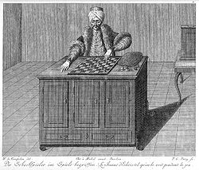
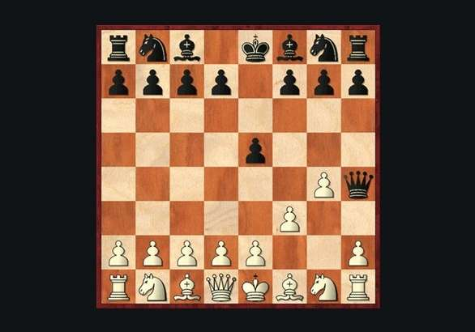
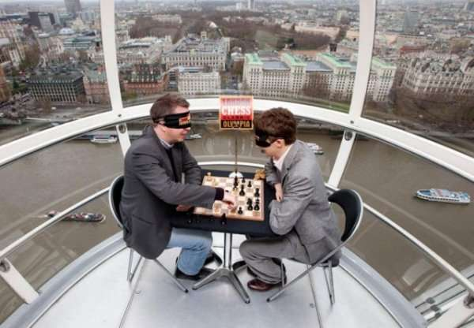
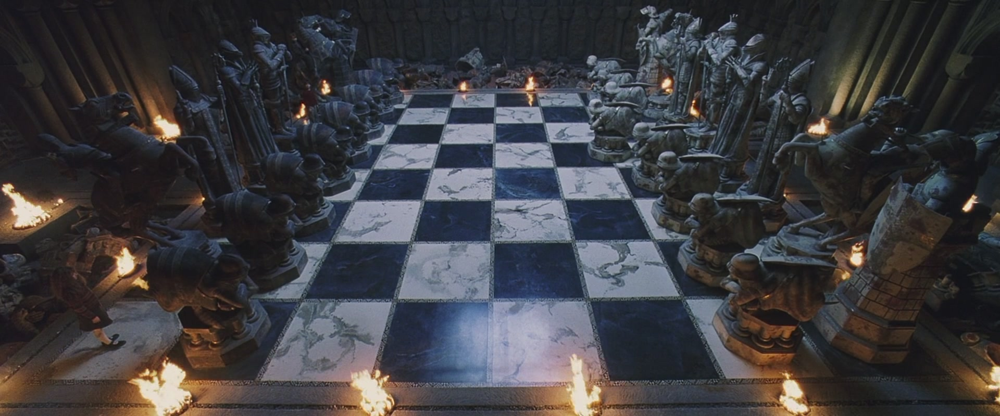

У 1770 році, угорський винахідник Вольфган фон Кемпелен створив шаховий автомат. Машина являла собою фігуру "турка" в людський зріст, який сидів за величезною дерев'яною шафою, чиї двері відкривалися, демонструючи публіці складні механізми. Механічна рука рухала фігури по полю, і обіграла таких знаменитих супротивників, як Наполеон Бонапарт і Бенджамін Франклін. Як виявилося багато років опісля, шаховий автомат не був машиною. Усередині автомата знаходився шахіст, який рухався всередині і переховувався, коли публіці показували складні механізми розумноїю "машини".
Найкоротшу шахову партію – мат у два ходи (“безглуздий мат”) – можна відтворити таким чином: 1. f3 e5 і 2. g4 Qh4++.
Одним з варіантів гри є шахи наосліп: шахіст може робити всі ходи, не бачачи шахової дошки. Як правило, у такого гравця є посередник, який здійснює переміщення фігур. Така вражаюча здатність властива багатьом сильним шахістам. Одним з рекордсменів цього варіанта гри в шахи є угорець Янош Флеш, який зіграв наосліп одночасної у 52-ма противниками і виграв 32 партії.
Найстаріший зі збережених наборів шахів був знайдений на острові Льюїс в Північній Шотландії. Він датується XII століттям нашої ери, і імовірно створений в Ісландії чи Норвегії. Його оригінальне виконання послужило зразком для чарівних шахових фігур у фільмі «Гаррі Поттер і філософський камінь».
Партія Бєлова-Прохорова 1991 року вразила кількістю перетворень пішаків на ферзів: тут їх було 5. Але вони не потішили нас довгим перебуванням, протримавшись на дошці тільки декілька ходів.